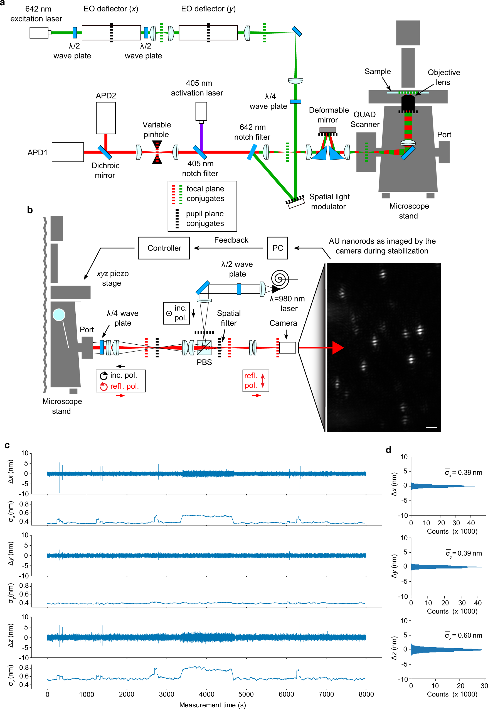

Precision beyond the classical view.
Try 4Pi-SIMFLUXFrom 4Pi-SIMFLUX to MINFLUX and Cryo-EM, see how modern microscopy pushes localization and structural biology forward.

From 4Pi-SIMFLUX to MINFLUX and Cryo-EM, see how modern microscopy pushes localization and structural biology forward.
THREE HANDS-ON RESEARCH STUDIES

STORM context, not 4Pi data. Gyparaki / Lakadamyali lab via NIH; public domain. Credit.
Compared with conventional localization, the detected photon channels encode more position information.
Distinguish precision from structural resolution; balance all three axes; evaluate drift and alignment.
Interferometric stability, model calibration and label geometry constrain interpretation. The lab is a photon-counting surrogate, not the published pipeline.

Earlier SIM context, not LA-SIM data. Strauss et al.; CC BY 4.0. Credit.
Compared with optical sectioning alone, patterned measurements and reconstruction recover additional spatial information.
Separate activation from excitation; reject background; distinguish sectioning from super-resolution.
Photochemistry, sample properties and computational assumptions affect results. The lab models sectioning only.

Optical two-colour STED context, not electrochemical data. Tassekaffee; CC BY-SA 3.0. Credit.
Label discrimination comes from electrochemical measurements rather than additional optical colours.
Acquire independent responses; check conditioning; distinguish multiplexing from spatial resolution.
Electrode geometry, redox conditions and sample compatibility matter. The lab uses illustrative response curves.
Published results, full paper titles and DOIs are documented in each lab’s science section. Images there are explicitly identified as contextual examples where they are not results from the cited study.
COMPACT RESEARCH LESSON / FLUORESCENCE LOCALIZATION

Problem: a blurred camera spot needs many photons to localize a single emitter precisely.
Innovation: move an excitation minimum around the emitter and infer position from relative photon counts. Iteratively repositioning the pattern concentrates information near the molecule.
Limitations: background, drift, imperfect patterns, emitter overlap and label offsets can dominate. Precision is not automatically structural resolution.
Key discovery: the cited MINFLUX study integrates targeted localization with active position stabilization on a common microscope platform. Measured stability in the figure is distinct from an image-resolution guarantee.
Compare with STORM → · Compare with 4Pi-SIMFLUX →
Roman Schmidt, Tobias Weihs, Christian A. Wurm et al. MINFLUX nanometer-scale 3D imaging and microsecond-range tracking on a common fluorescence microscope (2021). Open-access paper. Figure 1 unchanged, CC BY 4.0. No quantitative performance is predicted by this conceptual lesson.
COMPACT RESEARCH LESSON / ELECTRON STRUCTURAL BIOLOGY
Problem: dehydration can alter biological specimens; electron exposure damages them.
Innovation: vitrify a thin hydrated sample, image at cryogenic temperature with limited electron dose, then correct and combine measurements computationally. In single-particle cryo-EM, many particle orientations support a 3D reconstruction without requiring a crystal.
Limitations: ice thickness, preferred orientations, motion, heterogeneity and preparation can limit the map. Single-particle reconstruction assumes comparable particles; tomography uses a different acquisition strategy.
Key insight: low-dose projections can be combined to infer 3D structure. The displayed lysate image shows protein complexes; it is not itself an atomic model.
Jacques Dubochet, Joachim Frank and Richard Henderson shared the 2017 Chemistry Nobel Prize for cryo-EM development. Scientific background.
Pkastrit: original image · CC BY-SA 4.0. This compact lesson adds no reconstruction simulator.